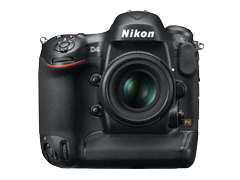

Nikon D4
The next-generation flagship digital SLR camera is equipped with a new Nikon FX-format CMOS image sensor (36.0 × 23.9 mm) and EXPEED 3, the latest image-processing engine specifically optimized for digital SLR camera.
Designed with the ultimate in versatility and functionality that offers superior image quality rich in detail along with excellent high-speed performance. The Nikon D4 has an effective pixel count of 16.2-million pixels, and offers superior image quality under a broad range of lighting conditions with its image sensor supporting an incredible range of sensitivities from ISO 50 to ISO 204800.
$5,999.95 Body only
- Further improved high-speed, multifunctional, high-performance image-processing engine EXPEED 3. [NEW]
- 51-point AF system with enhanced performance in subject acquisition and focusing in low-light situations.
- Superior quick response with approx. 0.12 s* startup time and approx. 0.042 s* shutter-release time lag.
- * Based on CIPA Guidelines.
- Dual card slots for CF card compatible with UDMA 7 and the next-generation recording media, the XQD memory card.
- High-speed continuous shooting at approx. 11 fps* in FX format (without AE/AF) and approx. 10 fps* (with AE/AF) [NEW].
- * Based on CIPA Guidelines.
- New Wireless Transmitter WT-5A/B/C/D that realizes high-speed workflow.
- HDR (High Dynamic Range) that combines images to produce a single image with a wider dynamic range.
- White balance that enables finer setting in 10-kelvin steps.
- High-performance, glass pentaprism viewfinder with approx. 100% frame coverage (FX format) and approx. 0.7x magnification.
- Approx. 921k-dot, wide-viewing angle, 8-cm (3.2-in.) LCD monitor with reinforced glass.
- "Sub-selector" for horizontal shooting and "Multi selector for vertical shooting" are newly employed for efficient operation.
- Button illumination that ensures better visibility of the operational system in dark situations. [NEW]
- Virtual horizon that detects both "pitching" and "rolling" directions.
- Newly developed shutter unit tested for approx. 400,000 cycles; shutter speed up to 1/8,000 s and flash synchronization up to 1/250 s.
- Highly efficient energy-saving design that achieves approx. 2,600 shots (with EN-EL18, based on CIPA Standard*1) and approx. 5,500 shots (based on Nikon standard*2).
*1 Measured at 23°C/73.4°F (±2°C/3.6°F) with an AF-S NIKKOR 24-70mm f/2.8G ED lens under the following test conditions: lens cycled from infinity to minimum range and one photograph taken at default settings once every 30 s. Live view not used.
*2 Measured at 20°C/68°F with an AF-S VR 70-200mm f/2.8G ED lens under the following test conditions: vibration reduction off, image quality set to JPEG normal, image size set to L (large), shutter speed 1/250 s, shutter-release button pressed halfway for three seconds and focus cycled from infinity to minimum range three times; six shots are then taken in succession and monitor turned on for five seconds and then turned off; cycle repeated once standby timer has expired.